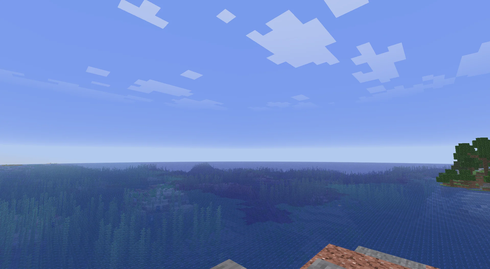
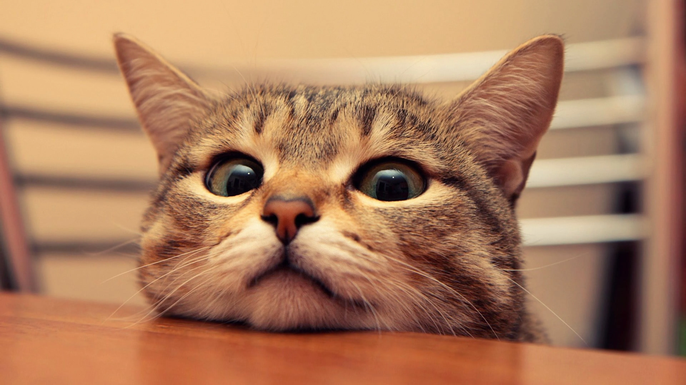

Всё, что нужно знать о моде
Strange Visuals сфокусирован на визуальных улучшениях, которые не нарушают правила серверов.
Установка
Установите Minecraft Fabric 1.21.8 в вашем лаунчере. Скачайте Fabric API и закиньте файл в папку mods. После этого скачайте наш мод и тоже закиньте его в папку mods. Готово — можно запускать.
Совместимость
Мод совместим с другими Fabric-модами и подходит для сборок. Мы рекомендуем его использовать вместе с модами на оптимизацию и другими клиентскими дополнениями.
Открытый код
Проект распространяется с открытым исходным кодом по лицензии GPL. Код доступен для изучения, доработки и форков при сохранении лицензии и авторства.
Мультисерверность
Мод может использоваться на серверах с разными правилами. Гибкая система скрытия отдельных функций автоматически отключает то, что запрещено на конкретном сервере.
Поддержка
Если вы хотите помочь в развитии мода и поддержать нашу команду, сделать это можно на странице поддержки.
Версия Minecraft
Мод разработан и поддерживается на версии 1.21.8 и не исключает перехода в будущем на более новую версию.
Fabric API
Для корректной работы мода нужен актуальный Fabric Loader и Fabric API под Minecraft 1.21.8.
Проблемы
Если у вас возникли проблемы с запуском или вы нашли баг, вы можете сообщить об этом на нашем Discord сервере.
Сравнение
визуала
Наглядная разница игры с нашим модом и без него. Также на изображениях не применялась дополнительная обработка, которую используют некоторые.


Чистый GUI
в двух темах
Аккуратный интерфейс мода без лишнего шума, который остаётся читаемым и в светлой, и в тёмной теме. Переключение в шапке сразу показывает, как GUI выглядит в игре.
Все функции
Полный список по категориям